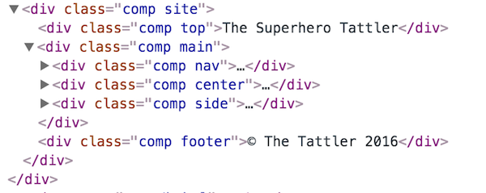
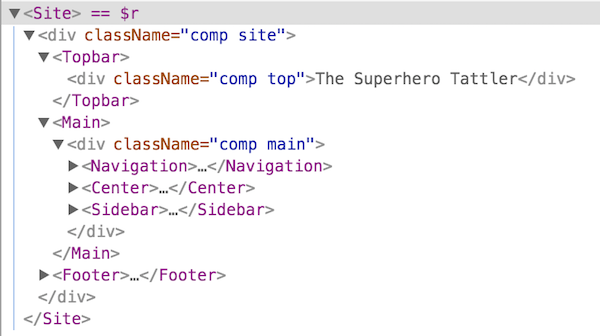
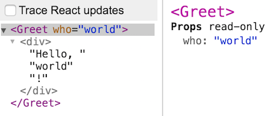

Dissecting a React component
In Handlebars you write a definition in html which is then compiled into a template function
In React there is no compilation. Instead you work with JS and write the template function yourself!
Here's the mandatory HelloWorld demo!
let HelloWorld = props => <div>Hello world!</div>;
As you can see the HelloWorld component is a plain JavaScript function, although with some weird xml syntax mixed in! That's called JSX, short for JavaScript XML.
The previous example was a bit boring as it was completely static. Here instead is a HelloSomeone component which greets whoever you tell it to:
let HelloSomeone = props => <div>Hello, {props.who}!</div>;
So, inside JSX we use single braces to switch back to JavaScript.
Hang on - how was that better than Handlebars? Wasn't the earlier Handlebars version...
<div>Hello, {{who}}!</div>
...much easier to both read and write?
For this simple example, yes. But! Just regular HTML is rarely enough to formulate the view.
A competent templating solution needs to provide more opportunity to express logic in connection with describing what the output should look like.
Consider for example a view that is supposed to render a bunch of links to a list of posts. We need to...
Here's a Handlebars solution to the aforementioned problem:
<div class="posts">
<h2>Posts</h2>
{{#if posts}}
{{#each posts}}
<a class="post" href="{{this.url}}">{{this.title}}</a>
{{/each}}
{{else}}
<p>No posts :(</p>
{{/if}}
</div>
As you saw, Handlebars - like so many other templating solutions - has augmented HTML with additional logic helpers, to accommodate for the fact that views often need logic.
This invariably means that you have to learn these augmentations, which are always solution-specific. Your knowledge on Handlebars helpers is useless outside a Handlebars context.
Here is a React solution to the same problem:
let ListOfPosts = props => {
let posts = (props.posts || []).map(p => (
<a class="post" href={p.url}>{p.title}</a>
);
return (
<div className="posts">
<h2>Posts</h2>
{ props.posts.length > 0 ? posts : <p>No posts ☹</p> }
</div>
);
};
Apart from the JSX syntax, everything else in the code is just pure JavaScript. Being an actual programming language, it has no problem with expressing logic.
HTML is of course better at expressing markup, since it is a markup language. This is why Facebook added the JSX syntax to JavaScript.
In essence: In a view we need to describe nested data (HTML) in connection with logic. This gives us two options:
Since logic is much more complex than nested data, option 2 seems much easier.
Yet, everyone but React chose option 1!
Who put the HTML in the JS?
Since JSX isn't (yet) a part of the language, some kind of transpilation must occur.
Otherwise the browser wouldn't know how to interpret the code. But where does this happen?
The absolute majority of React developers have a build step that doesn't just take care of JSX, but also allows the use of modules and perhaps other ES6/ES7 features.
This isn't unique to React, but true for JavaScript development in general.
The most popular tools for this are Webpack and Browserify.
They run JavaScript code on your local machine using Node, which in turn allows you to download dependencies using npm.
There's a lot more to be said about the build step, but we'll leave it for now as we'll use an in-browser solution to avoid complexity.
What we'll do is use a browser version of Babel, a library that can do all sorts of transformations on JavaScript code, including handling JSX.
Our setup is very easy - we include babel as a script tag along with everything else we need...
<head>
<title>Playing with React</title>
<script src="lib/react.min.js"></scripτ>
<script src="lib/react-dom.min.js"></scripτ>
<script src="lib/babel.js"></scripτ>
</head>
...and then we put our code in script tags with type set to text/babel:
<script type="text/babel">
let MyReactComponent = props => (
<div>I can use <strong>JSX</strong>!</div>
);
</scripτ>
Babel will notice the type and perform the conversion to regular JS when the document loads.
Note however that this solution is only for toying and demoing!
In a production environment you should precompile in a build step as previously discussed.
Whether we do it in a build step or in the browser - why isn't converting JSX a part of React?
Two main reasons;
As a non-React example: here's JSX being used in CycleJS code:
/** @jsx hJSX */ // <-- this points JSX to use hJSX instead
import {hJSX} from '@cycle/dom';
function main(drivers) {
return {
DOM: Observable.timer(0, 1000)
.map(i => <div>Seconds elapsed: {i}</div>)
};
}
acting on changes
Let's zoom back out for a bit and consider the problem of updating our UI whenever data changes.
Handlebars doesn't solve this problem at all, it just provides the initial DOM. In a dynamic app we need additional functionality to update the UI when something happens.
React instead takes a super-simple, brute force approach; it rerenders everything on every data update, using the same function for the initial render and every subsequent update.
Fine, rerendering everything on every update makes life easier for us developers, but surely that must have a huge performance penalty, lead to loss of scroll position and lots of other headaches for the user?
Nope! And here's why. We actually lied before - a React component doesn't output DOM, but virtual DOM.
The virtual DOM is simply a JavaScript representation of a DOM structure. For example, this HTML...
<div class="excerpt">
<h2>Chapter 1</h2>
<p>When MacGyver learned to fly</p>
</div>
...could be represented in JS through something like this:
let virtualDOM = {
type: "div",
attributes: {"class":"excerpt"},
children: [{
type: "h2",
children: ["Chapter 1"]
},{
type: "p",
children: ["When MacGyver learned to fly"]
}]
};
To see what virtual DOM actually looks like, check out the VirtualDOM demo!
The point of the virtual DOM is that it allows React to compare new output with the previous output, and figure out what changes needs to be made to the actual DOM.
Only those changes are actually made, so the complete rerender is just conceptual.
So here is what actually happens when the props of a component updates:
This seemingly simple idea is one of the biggest advantages of React, as it removes lots of complexity and makes components easy to reason about.
Perhaps you've heard of React Fiber? That was a complete rewrite of the diffing engine for React v16, resulting in faster diffing and rendering.
You don't need to know more than that since it is backwards compatible, but if you're interested the detailed explanation of the rewrite is rather fascinating.
The component petri dish
So, hopefully you remember the Nested components from a couple sections seconds back? If we open the demo and check webkit inspector we'd see something like this:

That is not super useful, as there is no way of telling what output comes from what component.
As React developers it is very convenient to think in components, so not being able to do that in the debugger is very detrimental!
Enter React devtools, a plugin to Chrome or Firefox. It provide a React tab, which gives the following view instead:

Now we can easily distinguish between the components!
It can also show component details such as what props were passed. Below we show this for the HelloSomeone demo:

For more details, check the React Devtools homepage.
The devtools also do a lot more, such as showing state and context. But you don't know about any of that yet, so, never mind!